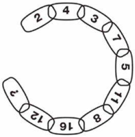

PUZZLE-9
Soru işareti yerine hangi sayı gelmelidir?

Cevap:
Soru işareti yerine gelmesi gereken sayı 22’dir. Dairenin içinde saat yönünde bir atlamalı olarak devam eden iki farklı dizi görülüyor.
Birinci dizi: 2-3-5-8-12
İkinci dizi: 4-7-11-16-22
Dikkat edilirse her iki dizideki sayılar arasındaki artış miktarı bir önceki artış miktarından 1 fazladır.